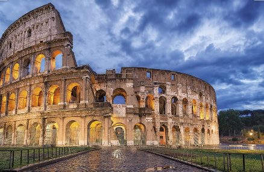

Maravillas del Mundo Moderno
Coliseo de Roma
Es un anfiteatro de la épaca del imperio romano, contruido en el siglo I, en el centro de Roma. Fue el más grande de los que se construyeron en el Imperio Romano.
Conocido Originalmente como Anfiteatro Flavio, pasa a ser llamado Coliseo porque a su lado había una estatua, el Coloso de Nerón. Un monumento dedicado al emperador Nerón que posteriormente sufrió transformaciones y llegó a desaparecer.
© Copyrigth 2021. Todos los derechos Reservados. Venezuela